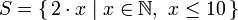
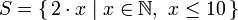

시작하기
준비, 시작!
 좋아요! 시작해 봅시다. 그럴 리 없겠지만 당신이 소개 따위 가볍게 무시하고 넘어가는 무서운 부류의 사람이라면(그래서 소개를 안 읽고 넘어왔다면), 다른건 몰라도 소개 챕터의 마지막 섹션은 지금이라도 읽고 오시기 바랍니다. 거기에 예제들을 따라하기 위해 필요한 것들과 어떻게 함수를 불러오는지 등이 설명되어 있으니까요. 가장 먼저 할 일은 ghc의 대화식(interactive) 모드를 켜고 함수를 좀 호출하면서 하스켈에 대한 기본적인 감을 익히는 것입니다. 우선 터미널을 켜고 ghci를 입력하세요. 이런 환영 문구가 나옵니다.
좋아요! 시작해 봅시다. 그럴 리 없겠지만 당신이 소개 따위 가볍게 무시하고 넘어가는 무서운 부류의 사람이라면(그래서 소개를 안 읽고 넘어왔다면), 다른건 몰라도 소개 챕터의 마지막 섹션은 지금이라도 읽고 오시기 바랍니다. 거기에 예제들을 따라하기 위해 필요한 것들과 어떻게 함수를 불러오는지 등이 설명되어 있으니까요. 가장 먼저 할 일은 ghc의 대화식(interactive) 모드를 켜고 함수를 좀 호출하면서 하스켈에 대한 기본적인 감을 익히는 것입니다. 우선 터미널을 켜고 ghci를 입력하세요. 이런 환영 문구가 나옵니다.
이제 GHCI가 실행되었네요, 축하합니다! 일단은 프롬프트가 Prelude> 라고 나와 있지만, 잉크를 아끼기 위해 좀 더 짧은 ghci> 라는 프롬프트로 변경해서 사용할 것입니다. 꼭 따라할 필요는 없지만 위와 같은 프롬프트를 보고 싶다면 :set prompt "ghci> " 라고 입력하면 됩니다.
간단한 산수를 좀 해보겠습니다.
특별한 설명이 필요 없습니다. 한번에 여러 연산자를 쓸 수도 있고, 일반적인 연산자 우선순위도 모두 적용됩니다. 물론 우선순위를 명확히 하거나 바꾸기 위해 괄호도 쓸 수 있습니다.
흠. 멋지죠? 사실 안 멋진거 저도 압니다. 다만 음수를 입력하실 때는 조금 주의를 기울이셔야 합니다. 하스켈에서 음수를 입력할 때는 무조건 괄호로 감싸는 것이 좋습니다. 5 * -3 라고 입력하면 GHCI가 짜증을 내지만 5 * (-3) 는 잘 동작합니다(이유는 나중에 나옵니다).
불리언 연산도 아주 직관적입니다. 아시다시피, && 는 and, || 는 or, not 은 말 그대로 not 연산입니다.
동일성 검사는 이렇게 합니다.
5 + "llama" 나 5 == True 를 시도해 볼까요? 첫 번째 코드를 실행해 보면 엄청나게 무서운 에러 메시지가 나옵니다.
으악! 사실 GHCI의 메시지는 별거 아니고 "llama" 는 숫자가 아니라서 5랑 어떻게 더할 지 알지 못한다는 뜻입니다. "llama" 뿐만 아니라 "four" 이거나 "4" 도 하스켈은 숫자로 보지 않고 문자열로 취급하기 때문에 동일한 문제가 발생합니다. + 는 양 쪽에 숫자가 올 것을 기대하기 때문입니다. 한편 True == 5 도 마찬가지로 타입이 맞지 않는다고 오류가 발생합니다. 하지만 + 를 쓸 때는 양쪽에 숫자만 올 수 있는 것과 달리 == 는 비교할 수 있는 것이면 어떤 것이든 괜찮습니다. 사과와 오렌지를 비교할 수는 없지요. 타입에 대해서는 나중에 좀 더 자세히 알아보겠습니다. Note: 5 + 4.0 는 문제 없이 동작합니다. 5 가 꽤나 능글맞은 녀석이라 정수처럼 동작하기도 하고 부동소수점 실수처럼 동작하기도 하기 때문이죠. 4.0 은 정수처럼 동작할 수 없습니다. 그래서 이 경우 5 가 실수처럼 동작합니다.
눈치 채셨을지 모르겠지만, 이미 우리는 여러 함수를 사용했습니다. 예를 들어 * 는 숫자 두 개를 받아서 곱해주는 함수였습니다. 다만 두 인자 사이에 샌드위치해서 호출했었죠. 이런 함수를 infix 함수라고 부릅니다. 하지만 숫자를 사용하지 않는 대부분의 함수는 prefix 함수입니다. 조금 더 자세히 살펴볼까요?
 대부분의 함수는 prefix이기 때문에 앞으로는 특별한 언급이 없으면 prefix 형태라고 가정합시다. 대부분의 명령형 언어에서 함수를 호출할 때는 함수 이름을 쓰고 괄호 열고, 인자들을 콤마로 구분해서 하나씩 쓰고, 괄호를 닫는 형태로 쓰게 됩니다. 하지만 하스켈에서는 함수를 호출할 때 함수 이름을 쓰고, 공백으로 띄우고, 인자들을 공백으로 구분해서 하나씩 쓰게 됩니다. 순전히 이해를 쉽게 하기 위해서, 하스켈에서 제일 재미 없는 함수를 한 번 호출해 봅시다.
대부분의 함수는 prefix이기 때문에 앞으로는 특별한 언급이 없으면 prefix 형태라고 가정합시다. 대부분의 명령형 언어에서 함수를 호출할 때는 함수 이름을 쓰고 괄호 열고, 인자들을 콤마로 구분해서 하나씩 쓰고, 괄호를 닫는 형태로 쓰게 됩니다. 하지만 하스켈에서는 함수를 호출할 때 함수 이름을 쓰고, 공백으로 띄우고, 인자들을 공백으로 구분해서 하나씩 쓰게 됩니다. 순전히 이해를 쉽게 하기 위해서, 하스켈에서 제일 재미 없는 함수를 한 번 호출해 봅시다.
succ 함수는 무엇이든 다음 값이 있는 값 하나를 인자로 받아 다음 값을 반환합니다. 보시다시피 함수 이름 뒤에 한 칸 띄고 인자를 썼을 뿐입니다. 인자를 여러개 쓸 때도 비슷합니다. 예를 들어, min 함수와 max 함수는 순서가 있는 타입의 값 두 개를 받아 min 은 둘 중 작은 것, max 는 둘 중 큰 것을 반환합니다. 보시죠.
함수 호출(인자를 공백으로 붙여서 함수를 부르는 것)은 가장 높은 우선순위를 갖습니다. 그래서 다음 두 식은 동일한 의미입니다.
그래서 9와 10의 곱의 다음 값인 91을 계산하려면 succ 9 * 10 가 아니라 succ (9 * 10) 라고 입력해야 합니다. succ 9 * 10 는 9의 다음 값과 10을 곱한 값, 즉 100을 계산하게 됩니다.
함수가 두 개의 인자를 받는다면, 함수를 backtick(`)으로 감싸서 infix 함수로 만들 수 있습니다. 예를 들어 div 함수는 두 정수를 받아 정수 나눗셈을 수행 합니다. div 92 10의 결과는 9가 되지요. 그러나 위와 같이 표현한다면, 둘 중 어떤 수로 나누고, 어떤 수가 나눠지는 건지 헷갈릴 수도 있습니다. 그래서 92 `div` 10처럼 infix 함수로 만들어 훨씬 명확히 보이게 할 수 있습니다.
명령형 언어를 사용하던 분들은 괄호가 함수 호출을 의미 할거라 집착하는 경향이 있습니다. 예를 들어 C언어에서는 foo() 나, bar(1) 또는 baz(3, "haha") 와 같은 형태로 함수를 호출합니다. 전에 말했던 것처럼 하스켈에서는 공백을 사용하지요. 그래서 C언어 예제에서의 함수들이 하스켈에서는 foo, bar 1, baz 3 "haha"와 같은 형태로 사용됩니다. 따라서, bar (bar 3)이라는 표현은 bar와 3이라는 인자로 bar 함수를 호출하는 것이 아니라, bar 함수를 인자 3 으로 호출하여 나온 결과로 다시 bar 를 호출하는 의미인 것입니다. C언어에서는 bar(bar(3)) 같은 형태를 보이겠지요.
함수 정의하기
이전 섹션에서 함수 호출의 기본적인 감을 배웠으니, 이젠 직접 만들어서 해봅시다! 텍스트 편집기를 열고, 숫자를 받아 2배를 시켜주는 아래 함수를 입력해보세요.
함수는 호출될 때와 비슷한 방식으로 정의됩니다. 정의할 때에도, 함수 이름 다음에 공백으로 구분된 인자들이 쓰입니다. 다만, 그 다음에 = 이 온다는 점이 다릅니다. baby.hs로 저장합시다. 다른 파일명도 괜찮습니다. 저장한 파일이 있는 곳으로 이동해서 ghci를 실행시켜봅시다. GHCI 안으로 들어오면, :l baby를 쳐보세요. 그럼 작성한 스크립트가 로드되고, 파일 안에 선언했던 함수들을 사용할 수 있게 됩니다.
+가 정수 또는 부동소수점 실수 등 어떤 종류의 숫자에 대해서든 동작하기 때문에, 이 함수도 어떤 종류의 숫자든 받을 수 있습니다. 이번엔 숫자 두 개를 받아 각각 2를 곱한 후, 더하는 함수를 만들어 볼까요?
간단하네요. 또는 doubleUs x y = x + x + y + y 이런 식으로도 표현 할 수 있습니다. 예상한 결과가 나오는지 확인 해 보세요(baby.hs에 이 함수를 추가하고 GHCI에서 :l baby 를 입력하여 다시 로드하는 걸 잊지마세요).
그리고 한 함수에서 다른 함수를 호출 할 수 있습니다. 그렇다면 doubleUs는 아래처럼 다시 선언 할 수도 있겠네요.
위 예제는 하스켈을 하면서 흔히 볼 수 있는 아주 단순한 패턴 중 하나입니다. 정확한 기본 함수들을 만들고, 그것들을 조합해서 더 복잡한 함수로 만듦으로써, 반복되는 작업을 피할 수 있습니다. 이런 상황은 어떨까요? 알고보니 double이 수를 2배 한다는 뜻이 아니라 3배 한다는 뜻이었다면? 이런 경우 doubleUs와 doubleMe의 동작이 모두 바뀌지만, doubleUs가 doubleMe를 이용해서 정의되고 있으니 doubleMe 만 x + x + x 라고 다시 정의하면 정상적으로 동작 하게 될 것입니다.
하스켈에서는 함수를 어떤 순서로 정의하든 상관이 없습니다. 그래서, doubleMe 를 먼저 정의하든, doubleUs 를 먼저 정의하든 상관 없다는 것이지요.
이제 100 이하의 숫자에만 2를 곱해주는 함수를 만들어 봅시다.

여기서 하스켈의 if 문을 소개하게 되네요. 아마도 다른 언어를 해보셨을테니 이미 if 문에 친숙하실 것 입니다. 다만 하스켈에서의 다른점은, else 문이 필수라는 것이지요. 명령형 언어에서는 조건이 충족되지 않는다면 그 if문을 그냥 넘어갈 수 있지만, 하스켈에서는 모든 문과 함수에서 반드시 뭔가를 돌려주어야 하기 때문입니다. 하스켈의 if문이 갖는 또다른 특징은, if문이 수식(expression)이라는 점입니다. 수식(expression)은 기본적으로 값을 반환하는 코드입니다. 5 는 5라는 값을 나타내므로 수식이고, 4+8 도 수식이고, x+y 도 x 와 y 의 합을 반환하는 수식입니다. else가 필수이기 때문에, if문은 언제나 어떤 값이든 반환하게 되고, 그래서 if문이 아니라 if식이 됩니다. 이번엔 앞서 만든 함수에 1을 더하는 함수를 만들어 봅시다.
Note: 앞의 함수에서는 if문을 여러 줄로 나누어 썼지만 여기서는 한 줄로 적어 보았습니다.
만약 여기서 if문을 싸고 있는 괄호를 뺀다면 x가 100 이하일 때만 1이 더해질 것입니다. 여기서 함수 이름 뒤에 ' 가 붙어 있다는 점에 주목하세요. 이 작은 따옴표는 하스켈 문법에서 아무런 의미가 없습니다. 그저 함수 이름에 쓸 수 있는 평범할 문자일 뿐입니다. 하지만 보통 한 함수의 strict (게으르지 않은) 한 버전이나 조금 수정된 버전을 의미합니다. ' 문자가 함수 이름에 쓸 수 있는 평범한 문자이기 때문에, 이런 함수도 만들 수 있습니다.
이 함수 정의에는 두 가지 특징이 있습니다. 첫번째는 함수 이름의 첫 글자를 소문자로 썼다는 점입니다. 함수 이름을 대문자로 시작할 수 없기 때문인데, 그 이유는 조금 뒤에서 살펴보겠습니다. 두번째 특징은 이 함수는 인자를 전혀 받지 않는다는 점입니다. 인자를 받지 않는 함수는 보통 정의(definition) 혹은 이름(name)이라고 부릅니다. 한 번 정의된 함수나 이름(name)은 절대로 중간에 값이 바뀌지 않기 때문에 conanO'Brien 라는 이름과 "It's a-me, Conan O'Brien!" 라는 값은 동일한 의미가 됩니다.
리스트를 소개합니다
 현실에서의 쇼핑 리스트처럼, 하스켈의 리스트는 대단히 유용합니다. 리스트는 하스켈에서 가장 많이 쓰이는 자료 구조이고, 대단히 다양한 방법으로 사용될 수 있기 때문에 대단히 많은 문제를 모델링하고 해결 할 때 유용하게 쓸 수 있습니다. 리스트는 정말 멋집니다. 이 섹션에서는 리스트의 기본과 리스트의 한 종류인 문자열, list comprehension을 알아볼 것입니다.
현실에서의 쇼핑 리스트처럼, 하스켈의 리스트는 대단히 유용합니다. 리스트는 하스켈에서 가장 많이 쓰이는 자료 구조이고, 대단히 다양한 방법으로 사용될 수 있기 때문에 대단히 많은 문제를 모델링하고 해결 할 때 유용하게 쓸 수 있습니다. 리스트는 정말 멋집니다. 이 섹션에서는 리스트의 기본과 리스트의 한 종류인 문자열, list comprehension을 알아볼 것입니다.
하스켈의 리스트는 동일한 타입의 값 여러 개를 저장하며, 동일한 타입의 값만 가질 수 있다 하여 동질성(homogenous) 자료 구조라고 불립니다. 그래서 정수들의 리스트나 문자들의 리스트는 쓸 수 있지만 정수와 문자가 섞인 리스트는 만들 수 없습니다.
이처럼 리스트는 대괄호로 둘러 싸여 콤마로 구분된 일련의 값으로 표현됩니다. [1,2,'a',3,'b','c',4] 같은 것들을 하려고 하면, 하스켈은 문자들은 정수가 아니라고 불평할 것입니다(문자도 실제로는 숫자이지만 여기서는 작은 따옴표로 묶여 있기 때문입니다). 문자열은 문자의 리스트에 불과합니다. "hello" 는 그냥 ['h','e','l','l','o']를 보기 좋게 적은 것에 지나지 않죠. 문자열이 리스트이기 때문에, 리스트를 조작하는 함수를 문자열에 그대로 적용해서 아주 편리하게 사용할 수 있습니다.
두 개의 리스트를 이어 붙이는 일은 아주 빈번하게 일어납니다. 하스켈에서 두 개의 리스트를 이어 붙이려면 ++ 연산자를 이용합니다.
++ 연산자를 이용해 긴 문자열들을 반복적으로 이어 붙일 때는 주의하세요. 두 개의 리스트를 이어 붙일 때([1,2,3] ++ [4] 와 같이 내용이 값 하나뿐인 경우도 포함) 하스켈은 왼쪽 리스트의 모든 값을 모두 순회합니다. 리스트가 길지 않을 때는 이런 특징이 별 문제가 되지 않지만, 5000만개쯤 값이 들어있는 리스트의 마지막에 값을 이어 붙이려면 시간이 좀 걸릴 겁니다. 하지만 반대로 리스트의 맨 앞에 새로운 값을 이어 붙이는 : 연산자는 어떤 경우에도 시간이 거의 걸리지 않습니다. 이 연산자는 cons 연산자라고 불리기도 합니다.
: 연산자는 숫자와 숫자 리스트 혹은 문자와 문자 리스트를 받아서 새로운 리스트를 반환하고, ++ 는 두 개의 리스트를 받는다는 점을 유의하세요. 그래서 ++ 연산자를 이용하는 경우에는, 값 하나만 추가하는 경우라도 그 값을 대괄호로 감싸서 리스트로 만들어 주어야 한다는 점을 잊지 마세요.
사실 [1,2,3] 는 1:2:3:[]를 간단하게 쓴 형태입니다. [] 는 빈 리스트이므로, 빈 리스트 앞에 3 을 붙이면 [3] 가 되고, 여기에 2 를 붙이면 [2,3] 이 되는 식입니다.
Note: [], [[]], [[],[],[]] 는 모두 다 다른 것들입니다. 첫번째 리스트는 그냥 빈 리스트이고, 두번째 리스트는 빈 리스트 하나를 값으로 가진 리스트이고, 세번째 리스트는 세 개의 빈 리스트를 값으로 가진 리스트입니다.
리스트에서 특정 위치의 값을 얻어오려면 !! 연산자를 이용합니다. 리스트의 인덱스는 0부터 시작합니다.
길이가 4인 리스트의 6번째 값을 얻어오는 등, 리스트의 길이를 넘어서는 위치의 값을 얻어오려고 하는 경우는 오류가 발생하니 주의하세요.
리스트는 리스트를 값으로 가질 수 있습니다. 실은 리스트의 리스트 뿐만 아니라 리스트의 리스트의 리스트의 리스트의 리스트의 리스트 같은 것도 만들 수 있습니다.
한 리스트의 값으로 포함되는 리스트들은 서로 길이가 다를 수는 있습니다. 하지만 타입이 달라서는 안됩니다. 숫자와 문자가 섞인 리스트를 만들 수 없는 것처럼, 숫자 리스트와 문자 리스트가 섞인 리스트는 만들 수 없습니다.
<, <=, >, >= 를 이용해서 두 리스트를 비교하면, 사전순으로 두 리스트를 비교한 결과를 반환합니다. 즉, 첫번째 값을 비교하고, 두 값이 다르지 않으면 다음 값을, 다음 값도 다르지 않으면 그 다음 값을 비교해서 작은 값이 먼저 등장하는 리스트가 작은 리스트로 판별되는 방식입니다.
리스트를 조작하는 함수는 또 무엇이 있을까요? 이제부터 리스트를 조작하는 기본 함수들을 알아보겠습니다.
head 함수는 리스트를 받아 받은 리스트의 머리(head)를 반환합니다. 머리란 리스트의 첫번째 값을 의미합니다.
tail 함수는 리스트를 받아 리스트의 머리를 제외한 리스트, 즉 리스트의 꼬리(tail)를 반환합니다. 받은 리스트에서 머리를 떼어낸 리스트를 반환한다고 할 수도 있습니다.
last 함수는 리스트를 받아 리스트의 마지막 값을 반환합니다.
init 함수는 리스트를 받아 리스트의 마지막 값을 제외한 리스트를 반환합니다.
리스트를 괴물에 비유하자면 이런 모양에 가깝습니다.

그런데 빈 리스트의 머리를 얻어오려고 하면 어떻게 될까요?
헐! 괴물이 없으면 괴물 머리(head)도 없습니다. 그러니까 head, tail, last, init 와 같은 함수를 사용할 때는 빈 리스트를 넘겨주지 않도록 주의하세요. 이 오류는 컴파일시에는 나오지 않으므로 실수라도 이런 함수들에 빈 리스트를 넘겨주지 않도록 언제나 예방책을 만들어 두는 것이 좋습니다.
length 함수는 리스트를 받아 리스트의 길이를 반환합니다.
null 함수는 리스트를 받아 받은 리스트가 비어있는지 확인합니다. 리스트가 비어 있으면 True, 그렇지 않으면 False 가 반환될 것입니다. xs 라는 리스트가 비어있는지 확인할 때 xs == [] 대신 null xs 를 사용할 수 있습니다.
reverse 함수는 리스트를 받아 순서를 반대로 뒤집은 리스트를 반환합니다.
take 함수는 숫자와 리스트를 받습니다. 그리고 리스트의 앞에서부터, 받은 숫자만큼의 개수를 취한 리스트를 반환합니다.
리스트의 길이보다 큰 숫자를 넘겨 주는 경우에도 오류 없이 받은 리스트를 그대로 반환합니다. 숫자가 0이면 빈 리스트를 반환합니다.
drop 함수는 숫자와 리스트를 받아 받은 리스트의 앞에서부터 받은 숫자만큼의 개수를 덜어낸 리스트를 반환합니다.
maximum 함수는 순서가 있는 값들로 구성된 리스트를 받아 그 중 가장 큰 값을 반환합니다.
minimum 함수는 가장 작은 값을 반환합니다.
sum 함수는 숫자 리스트를 받아 리스트에 포함된 값들의 총합을 반환합니다.
product 함수는 숫자 리스트를 받아 리스트에 포함된 값들을 모두 곱한 값을 반환합니다.
elem 함수는 값과 리스트를 받아 리스트에 값이 포함되어 있는지 확인하여 반환합니다. 이 함수는 가독성을 위해 주로 infix 형태로 사용됩니다.
이상 리스트와 관련된 기본적인 함수 몇 개를 살펴보았습니다. 추후에 리스트와 관련된 더 복잡한 함수들을 다루게 될 것입니다.
텍사스 "레인지"스
 1 부터 20 사이에 포함된 모든 숫자들의 리스트를 만들려면 어떻게 해야 할까요? 물론 그냥 1 부터 20 까지의 숫자를 전부 다 나열할 수도 있겠지만 프로그래밍 언어를 능숙하게 쓰고자 하는 신사에겐 너무 야만적인 일입니다. 그러니 우리는 범위(range) 기능을 이용합시다. 범위는 열거 가능한(enumerable) 값들로 이루어진 arithmetic sequence를 만드는 방법입니다. 숫자는 하나, 둘, 셋, 넷, 처럼 열거가 가능합니다. 문자도 가능합니다. 누구나 A부터 Z까지 순서대로 읽을 수 있습니다. 하지만 이름은 열거가 불가능합니다. “준수” 다음에, 혹은 그 앞에 오는 이름은 무엇이 되어야 할까요? 저는 모르겠습니다.
1 부터 20 사이에 포함된 모든 숫자들의 리스트를 만들려면 어떻게 해야 할까요? 물론 그냥 1 부터 20 까지의 숫자를 전부 다 나열할 수도 있겠지만 프로그래밍 언어를 능숙하게 쓰고자 하는 신사에겐 너무 야만적인 일입니다. 그러니 우리는 범위(range) 기능을 이용합시다. 범위는 열거 가능한(enumerable) 값들로 이루어진 arithmetic sequence를 만드는 방법입니다. 숫자는 하나, 둘, 셋, 넷, 처럼 열거가 가능합니다. 문자도 가능합니다. 누구나 A부터 Z까지 순서대로 읽을 수 있습니다. 하지만 이름은 열거가 불가능합니다. “준수” 다음에, 혹은 그 앞에 오는 이름은 무엇이 되어야 할까요? 저는 모르겠습니다.
1 부터 20 사이의 모든 자연수를 포함하는 리스트를 만들려면 그냥 [1..20] 라고 쓰면 됩니다. 그러면 [1,2,3,4,5,6,7,8,9,10,11,12,13,14,15,16,17,18,19,20] 라고 쓴 것과 완전히 똑같은 효과가 납니다. 그러니 저 숫자를 전부 입력하는 건 바보짓이죠.
범위를 지정할 때 차이(step)도 지정할 수 있습니다. 1 부터 20 사이의 모든 짝수를 포함하는 리스트를 쓰려면 어떻게 할까요? 혹은 1 부터 20 사이의 모든 3의 배수 리스트는 어떻게 쓸까요?
단순히 원하는 리스트의 처음 두 값을 콤마로 구분해서 쓰고, 상한값(upper limit)을 입력하면 됩니다. 기능은 나름대로 쓸만하기는 하지만, 너무 많은 걸 기대하지는 마세요. 2의 제곱수들의 리스트를 계산하고 싶다고 [1,2,4,8,16..100] 라고 써도 하스켈은 무슨 의미인지 알지 못합니다. 우선은 차이를 하나만 지정할 수 있기 때문이고, 처음 몇 개의 값만으로는 범위의 산술적 의미를 정확히 파악할 수 없기 때문입니다.
20 부터 1 까지의 숫자를 가진 리스트를 만들려면 [20..1] 라고 하면 안되고. [20,19..1] 라고 써주어야 합니다.
실수를 범위에서 이용할 때는 특히 더 주의하셔야 합니다. 부동 소수점은 정의상 완전히 정확한 값을 갖지 않기 때문에 범위에서 이용하면 끔찍한 결과가 종종 발생하기 때문입니다.
저는 이런 식으로 쓰지 마시기를 추천합니다.
재미있게도 하스켈에서는 상한값(upper limit)을 지정하지 않고 무한한 리스트를 나타내는 범위를 만들 수 있습니다. 무한한 리스트에 대해서는 나중에 다시 다루기로 하고, 간단한 예를 한 가지만 들어보겠습니다. 13의 배수들을 작은 것부터 24개 얻어오고 싶다면 앞서 살펴본 범위 기능을 이용해 [13,26..24*13] 라고 쓸 수도 있지만 무한한 리스트를 이용해서 take 24 [13,26..] 라고 더 멋지게 쓸 수도 있습니다. 이것이 가능한 것은 하스켈의 게으른 특성 때문에 무한한 리스트를 당장 계산해서 무한 루프에 빠지는 일이 생기지 않기 때문입니다. 게으른 하스켈은 무한한 리스트에서 정말로 필요한 값만 계산하려고 하고, 이 경우에는 무한한 리스트의 첫 24개만 필요했던 것입니다.
무한한 리스트를 만들어내는 편리한 함수 몇 개만 살펴보겠습니다.
cycle 함수는 리스트 하나를 받아 받은 리스트를 무한히 반복하는 무한한 리스트를 반환합니다. 무한한 리스트를 반환하기 때문에 이 함수의 실행 결과를 그냥 출력하려고 하면 강제로 멈추기 전까지 계속 출력됩니다.
repeat 함수는 값을 하나 받아 받은 값을 무한개 포함한 리스트를 반환합니다. 값이 하나뿐인 리스트를 받은 cycle 함수와 유사합니다.
사실 이처럼 하나의 값을 특정 개수만큼 반복한 리스트를 원하는 경우엔 replicate 함수가 더 간편합니다. replicate 3 10 는 [10,10,10] 를 반환합니다.
안녕하세요 list comprehension입니다
 수학 수업을 들을 때 조건제시법(set comprehension)으로 집합을 정의하는 방법에 대해 배운 적이 있으실 겁니다. 조건제시법은 일반적인 집합에 추가적인 조건을 붙여 보다 구체적인 집합을 만드는 방법입니다. 짝수인 자연수를 만들고자 하는 경우에는 조건제시법으로  처럼 쓸 수 있습니다. 세로선(|) 앞부분을 output function, x는 변수, N은 input set, x <= 10 은 술부(predicate)라고 부릅니다. 그래서 앞서 나온 집합은 모든 자연수 집합에서 주어진 조건(10 이하)을 만족하는 모든 수들을 각각 2배한 집합을 나타냅니다.
수학 수업을 들을 때 조건제시법(set comprehension)으로 집합을 정의하는 방법에 대해 배운 적이 있으실 겁니다. 조건제시법은 일반적인 집합에 추가적인 조건을 붙여 보다 구체적인 집합을 만드는 방법입니다. 짝수인 자연수를 만들고자 하는 경우에는 조건제시법으로  처럼 쓸 수 있습니다. 세로선(|) 앞부분을 output function, x는 변수, N은 input set, x <= 10 은 술부(predicate)라고 부릅니다. 그래서 앞서 나온 집합은 모든 자연수 집합에서 주어진 조건(10 이하)을 만족하는 모든 수들을 각각 2배한 집합을 나타냅니다.
이런 함수를 쓰려면 take 10 [2,4..] 라고 쓸 수 있기는 합니다. 하지만 10 이하의 자연수들을 2배한 집합처럼 단순한 집합이 아니라 더 복잡한 집합을 표현할 때는 어떻게 해야 할까요? 이 때 list comprehension을 사용할 수 있습니다. list comprehension은 집합 조건제시법(set comprehension)과 아주 유사합니다. 그래서 앞서 살펴본 가장 작은 짝수 10개를 하스켈에서는 [x*2 | x <- [1..10]] 라고 쓸 수 있습니다. 이 식에서 x 는 [1..10] 에서 얻어오고, [1..10] 로 한정된 x 의 값을 2배한 값들을 갖는 리스트를 얻게 됩니다. 이 식을 GHCI에 입력해 보겠습니다.
보시다시피 원하던 결과가 나옵니다. 이제 좀 더 복잡한 조건을 추가해 보겠습니다. 조건은 변수의 범위를 한정시키는 부분 뒤에 콤마로 구분해서 추가합니다. 예를 들어, 앞의 식에서 [1..10] 에서 2배했을 때 12 이상인 값들만 취해 그 값을 각각 2배한 값들로 이루어진 리스트는 다음과 같이 쓸 수 있습니다.
잘 되는군요. 50 부터 100 사이의 정수들 중 7로 나눈 나머지가 3인 값들로 이루어진 리스트는 어떻게 쓸 수 있을까요? 역시 아주 쉽습니다.
아주 잘 됩니다. 리스트를 조건을 이용해 추리는 것을 필터링(filtering)이라고 합니다. 그래서 지금 우리는 숫자 리스트를 주어진 술부(predicate)로 필터링해서 사용하고 있는 것이죠. 숫자 리스트를 받아서 그 중 짝수는 버리고 홀수만 추려, 각 숫자가 10보다 작으면 "BOOM!" 으로, 10 이상이면 "BANG!" 이라고 치환하는 함수가 필요하다고 합시다. 이런 함수는 다음과 같이 쓸 수 있습니다.
조건식의 마지막 부분이 술부(predicate)로, odd 함수는 넘겨받은 숫자가 홀수이면 True 를, 짝수이면 False 를 반환하는 함수입니다.
조건을 여러개 추가할 수도 있습니다. 주어진 리스트의 값들 중 주어진 모든 조건식을 만족하는 값들만 최종 결과에 반영됩니다. 10에서 20 사이의 정수 중, 13, 15, 19는 제외한 리스트는 다음과 같이 쓸 수 있습니다.
조건만 여러개 쓸 수 있는 것이 아니라, 여러 개의 리스트로부터 값을 얻어올 수도 있습니다. 여러 개의 리스트로부터 값을 얻어오는 조건식을 쓰면, 주어진 리스트들의 값들로 만들 수 있는 모든 조합이 output function에 적용됩니다. 그래서 list comprehension에 길이가 4인 리스트 두 개를 필터링 없이 주면 길이가 16인 리스트가 만들어집니다. 예를 들어, 두 개의 리스트 [2,5,10] 와 [8,10,11] 에서 두 리스트의 숫자들로부터 만들 수 있는 모든 조합을 만들려면 이렇게 쓰면 됩니다.
예상한대로 만들어진 리스트의 길이는 9입니다. 이 중 50보다 큰 숫자들만 추리고 싶으면 어떻게 하면 될까요?
숫자 말고 형용사들의 리스트와 명사들의 리스트를 조합해서 이상한 단어들을 만들어 봅시다.
이번엔 list comprehension을 이용해 length 와 같은 기능을 하는 length' 함수를 만들어 봅시다.
_ 는 리스트에서 나오는 값이 무엇이든 사용되지 않으므로 신경쓰지 않겠다는 의미로 사용되는 기호입니다. 이 함수는 리스트의 모든 값을 1 로 치환하고 그 합을 구합니다. 그러면 리스트의 길이가 되겠지요.
앞서 말씀드렸던 바대로 문자열도 리스트이기 때문에, list comprehension을 이용해 문자열도 만들 수 있습니다. 문자열을 하나 받아서 대문자만 추려내는 함수는 이렇게 쓸 수 있습니다.
실행 결과는 다음과 같습니다.
여기서는 list comprehension의 조건식이 중요합니다. 조건식은 새로운 리스트에는 주어진 리스트의 값들 중 ['A'..'Z'] 에 속한 값들만 포함되어야 함을 나타냅니다. 만약 리스트를 값으로 갖는 리스트를 다루는 경우라면 중첩된(nested) list comprehension도 물론 가능합니다. 숫자 리스트들을 포함한 리스트에서 형태는 유지하되 홀수 값만 제거해 봅시다.
list comprehension을 여러 줄로 나누어 쓰는 것도 가능합니다. 그러니 GHCI를 사용하는 경우가 아니라면 긴 list comprehension은 여러 줄로 나누어 쓰는 것이 좋습니다. 특히 중첩된 list comprehension은 더더욱 여러 줄로 나누어 쓰는 것이 좋습니다.
튜플

어떻게 보면 튜플은 여러 개의 값을 묶어 하나의 값으로 취급하게 한다는 점에서 리스트와 비슷합니다. 하지만 둘 사이에는 근본적인 차이가 있습니다. 숫자들의 리스트는 말 그대로 숫자들의 리스트입니다. 그래서 리스트에 포함된 숫자가 딱 한 개가 됐든 엄청나게 많든 상관 없이 모두 숫자들의 리스트입니다. 반면 튜플을 사용할 때는 정확히 몇 개의 값이 튜플에 포함되는지 알아야 하고, 포함된 값의 개수가 다른 튜플들은 모두 다른 타입으로 취급됩니다. 또 튜플은 포함된 값들을 콤마로 구분하고, 리스트와 달리 괄호로 감싸서 표현합니다.
또다른 중요한 차이점은 튜플에 포함된 값들은 (리스트에서는 모두 같은 타입의 값들만 포함될 수 있었던 것과 달리) 타입이 다를 수 있다는 점입니다.
하스켈에서 2차원 벡터를 어떻게 나타낼 수 있을지 생각해 봅시다. 일단 리스트를 사용하는 방법이 있겠지요. 뭐, 그것도 방법은 방법입니다. 이런 방법으로 벡터를 나타내면서 2차원 평면 상의 도형의 꼭지점들을 리스트로 표현한다면 어떻게 될까요? [[1,2],[8,11],[4,5]] 와 같이 쓰면 되겠죠. 여기서 문제는 실수로 [[1,2],[8,11,5],[4,5]] 와 같은 리스트를 넘겨주더라도 여전히 숫자들의 리스트를 값으로 갖는 리스트이기 때문에 오류가 발생하지 않는다는 것입니다. 하지만 이런 리스트는 이치에 맞지 않죠. 하지만 2개의 값을 갖는 튜플(흔히 pair라고 부릅니다)은 그 자체로 고유한 타입이 되므로 pair의 리스트에는 3개의 값을 갖는 튜플(흔히 triple이라고 부릅니다)이 포함될 수 없습니다. 벡터를 리스트가 아닌 튜플로 만들기 위해서 각진 괄호 대신 둥근 괄호로 바꾸어 보면 [(1,2),(8,11),(4,5)] 라고 쓸 수 있습니다. [(1,2),(8,11,5),(4,5)] 라고 쓰면 어떻게 될까요? 이런 오류가 납니다.
이 오류 메시지는 pair와 triple을 한 리스트에 쓰려고 했는데, 그러면 안된다는 메시지입니다. [(1,2),("One",2)] 같은 것도 역시 쓸 수 없습니다. 리스트의 첫번째 값은 숫자들의 pair였는데 두번째 값은 문자열과 숫자의 pair이므로 타입이 다르기 때문입니다. 튜플은 굉장히 다양한 자료를 나타내는 데 사용될 수 있습니다. 누군가의 이름과 나이를 하스켈에서 표현할 때 ("Christopher", "Walken", 55) 라고 할 수 있죠. 그리고 보시다시피 (문자열은 문자의 리스트이므로) 튜플은 리스트를 값으로 가질 수 있습니다.
일정한 개수의 값을 포함하는 자료를 쓰고자 할 때는 리스트 대신 튜플을 사용하시기 바랍니다. 길이가 다른 튜플은 서로 다른 타입이기 때문에 튜플은 리스트에 비해 훨씬 더 엄격합니다. 그래서 임의의 튜플에 새로운 값을 추가하는 함수는 만들 수 없습니다. 비슷한 기능을 구현하려면 pair에 값을 추가해서 triple을 반환하는 함수를 따로 만들고, triple에 값을 추가해서 길이가 4인 4-튜플을 만들어 반환하는 함수를 따로 만들어야 합니다.
또 값이 하나뿐인 리스트는 있지만 값이 하나뿐인 튜플은 존재하지 않습니다. 왜냐하면 값이 하나뿐인 튜플은 그냥 포함된 값 그 자체와 다를 바가 없어서 사용할 이유가 없기 때문입니다.
튜플은 포함된 값들이 모두 비교할 수 있는 값들이면 비교할 수 있다는 점에서는 리스트와 비슷합니다. 하지만 길이가 다른 두 리스트는 비교할 수 있는 것과 달리 길이가 다른 두 튜플은 비교할 수 없습니다. 이제 pair와 관련된 함수를 몇 개 살펴보겠습니다.
fst 함수는 pair를 하나 받아 그 첫번째 값을 반환합니다.
snd 함수는 pair를 하나 받아 그 두번째 값을 반환합니다.
zip함수는 두 개의 리스트를 받아 pair의 리스트를 반환합니다. 받은 두 개의 리스트로부터 값들을 추출해서 각각을 pair로 묶은 리스트를 반환하는 것입니다. 꽤 간단한 함수지만 쓸모가 많습니다. 두 개의 리스트를 조합하거나 두 리스트를 동시에 순회해야 하는 경우에 특히 유용합니다. 예제를 보시죠.
받아온 두 리스트의 값들을 pair로 묶어 새 리스트를 반환했습니다. 두 리스트의 첫번째 값은 새 리스트의 첫번째 값, 두번째 값은 두번째 값이 되는 식이죠. 튜플은 서로 다른 타입의 값 두 개를 묶는데 사용될 수 있으므로 zip 함수는 타입이 다른 두 리스트도 받을 수 있습니다. 그런데 만약 두 리스트의 길이가 다르면 어떻게 될까요?
짧은 리스트에 맞춰 긴 리스트의 뒷부분이 무시되었군요. 이런 특성과 하스켈의 게으른 속성 덕분에 이 함수에는 길이가 무한한 리스트를 줄 수도 있습니다.

자, 이제 마지막으로 튜플과 list comprehension을 이용해서 풀 수 있는 문제를 하나 내겠습니다. 각 변의 길이가 모두 10 이하의 정수이고 세 변의 합이 24인 직각 삼각형을 계산하려면 어떻게 할까요? 우선, 각 변의 길이가 10 이하인 모든 삼각형을 계산해 봅시다.
그냥 1부터 10까지의 정수 리스트를 주고 triple로 묶는 list comprehension식입니다. 이 triangles 함수를 GHCI에서 실행해 보면 각 변의 길이가 10 이하의 정수인 모든 삼각형을 나타내는 튜플들의 리스트가 나올 것입니다. 이제 여기에 직각삼각형만 추려내는 조건을 붙여보겠습니다. 중복된 결과를 제거하기 위해 추가로 b 변이 빗변인 c보다 길지 않도록 하는 조건도 추가해 보았습니다.
거의 다 됐습니다. 이제 여기에 세 변의 합이 24라는 조건만 추가하면 되겠죠.
원하던 답이 나왔습니다! 살펴보신 문제 해결 과정은 함수형 프로그래밍에서는 흔한 패턴입니다. 원하는 답의 후보를 모두 포함하는 집합에서 시작해서 그 집합에서 일부를 쳐내거나 변환해 가면서 최종 답안을 구하는 것입니다.